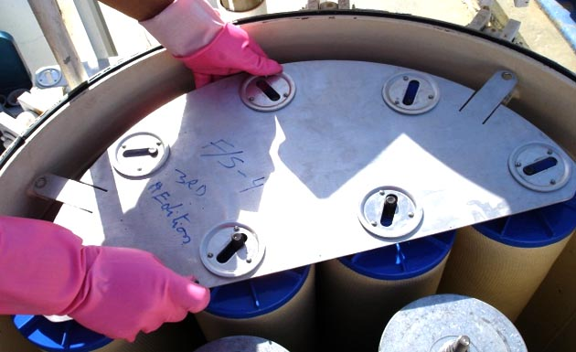

Session 8.6
Filter Inspection
8.6.1 Common Inspection Findings
- DP readings taken @ low flow (<50%)
- Max achievable flow not accurately determined
- Misreading DP due to worn or incorrect scale fitted
- Weekly plots and DP correction issues
- correction was done @ low flow (<50%)
- correction was done @ the rated flow
- source of correction algorithm unknown
- correction was not done
- No actions reported for drops of DP >5psi
- DP gauge checks not done / not recorded
- DP switch reset uncontrolled / possible to reset without a key
Filter Inspection
Safety Tip
Use the safety lock pin to secure the vessel dome cover in place while inspection
The unit shall be put out of service during the inspection period. Choose a day which is not windy or dusty, and if not under cover, when rain is not forecast. The vessel should not be exposed to or close to any kind of heat sources, and grounded. The inspection process should be completed within a minimum time to reduce the risk of fire hazard or filter vessel internal and filter elements contamination.
- The unit shall be drained and the cover and sump plate shall be removed.
- In a horizontal vessel, the section between end cover and element holding plate shall be drained by removing the end plug.


- Elements shall be inspected thoroughly, after removing the spider plate, using an explosion proof torch or by reflected sunlight as necessary to facilitate viewing those parts of the elements and vessel remote from the vessel lid. .
- Elements showing signs of “breakthrough”, should be replaced
- Elements shall be inspected thoroughly, after removing the spider plate, using an explosion proof torch or by reflected sunlight as necessary to facilitate viewing those parts of the elements and vessel remote from the vessel lid. .
- Elements showing signs of “breakthrough”, should be replaced
- The elements or their hold down nuts shall be checked for correct torque and the lid replaced.
- Too little torque can result in product bypassing seals
- Too much can cause element and seal damage.
- Whenever new elements are fitted the manufacturers data sheet must be consulted for the correct torque. It may be different from the last element type.
- “Spiders” should not be exerting significant sideways force when fitted as this may reduce the effectiveness of seals, and cause by-passing.
- Elements must be sitting centrally and squarely on their mount fittings otherwise seals will likely not work properly.
- Components of spiders, hold down nuts, etc. must not be galvanised, cadmium plated, brass and should preferably be stainless steel.
- Elements shall be removed only if it is not possible to examine these in place Heavily localized discoloration of elements may indicate a weak area, bypassing or sign of internal rupture

- Teflon coated screen type second stage separator elements in filter separators shall be inspected closely for general condition and tested for water repellence in accordance with manufacturers’ recommendations.
- Teflon coated screen type second stage separator elements in filter separators shall be inspected closely for general condition and tested for water repellence in accordance with manufacturers’ recommendations.

- If elements have been removed, the element end seals shall be inspected for general condition.
- If seals are loose they shall be re-cemented to the end plate with petroleum-resistant epoxy type glue mixed in accordance with the manufacturers’ instructions and used carefully.
- If the visual examination indicates signs of excessive sediment, bacterial growth or stained internal lining, the vessel shall be washed with clean, fresh water and swabbed dry. Elements shall be replaced.
- The vessel internal lining shall be repaired if required.
8.6.2 Filter Inspection
- If the cover seal is not replaced routinely, the filters vessel may start LEAKING after changing the elements

- Provided that the all the inspection steps are satisfactory:
- The dome cover shall be retightened with a torque according to the manufacturers’ recommendations.
- The vessel shall be filled slowly with fuel per gravity if possible, or by partially opening the upstream isolation valve. This is to minimize static electricity generation risks.
- Fires have occurred in filters when filling too fast.
- the differential pressure gauge and other appurtenances, such as the air eliminator valve and safety relief valve, should be checked and serviced as necessary during annual inspections.
- The inspected filter shall be set up to circulate fuel with a quantity not less than 5,000 liter,
- A sump sample will be subject to visual control check to make sure that no fibers coming out of the new filter element installed.
- he differential pressure gauge and other appurtenances, such as the air eliminator valve and safety relief valve, should be checked and serviced as necessary during annual inspections.
- The inspected filter shall be set up to circulate fuel with a quantity not less than 5,000 liter,
- A sump sample will be subject to visual control check to make sure that no fibers coming out of the new filter element installed.
- A record shall be maintained of annual inspections and servicing carried out with the following data stenciled on the filter vessel body:
- Date of last inspection
- Date of due inspection
- Date of commissioning
- Date of elements due change out
- Different torques applied to tighten elements and spider
- Number of elements used in each stage
- Element’s manufacturer identification number